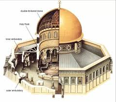
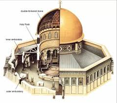
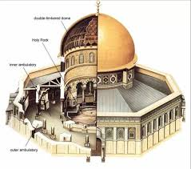
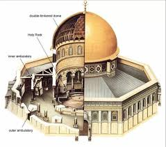

-Domed wooden octagon -Influenced by centrally planned buildings(Santa Costanza and the Pantheon) -Columns are spoila taken from Roman monuments
--The building houses several sacred sites –The place where Adam was born –The site in which Abraham nearly sacrificed Isaac –The place where the Temple of Jerusalem was located -Meant to rival the Christian church of the Holy Specular in Jerusalem -Arabic Calligraphy on the mosaic decoration urges Muslims to embrace Allah as the one God and indicates that the Christian notion of the Trinity is an aspect of polytheism -Oldest surviving Qur’an verse; first use of Qur’an verses in architecture; one of the oldest Muslim buildings.
-A pilgrimage site for the faithful -Not a mosque; its original function has been debated
Context
--Erected by Abd al-Malik, the caliph of the Umayyad Dynasty